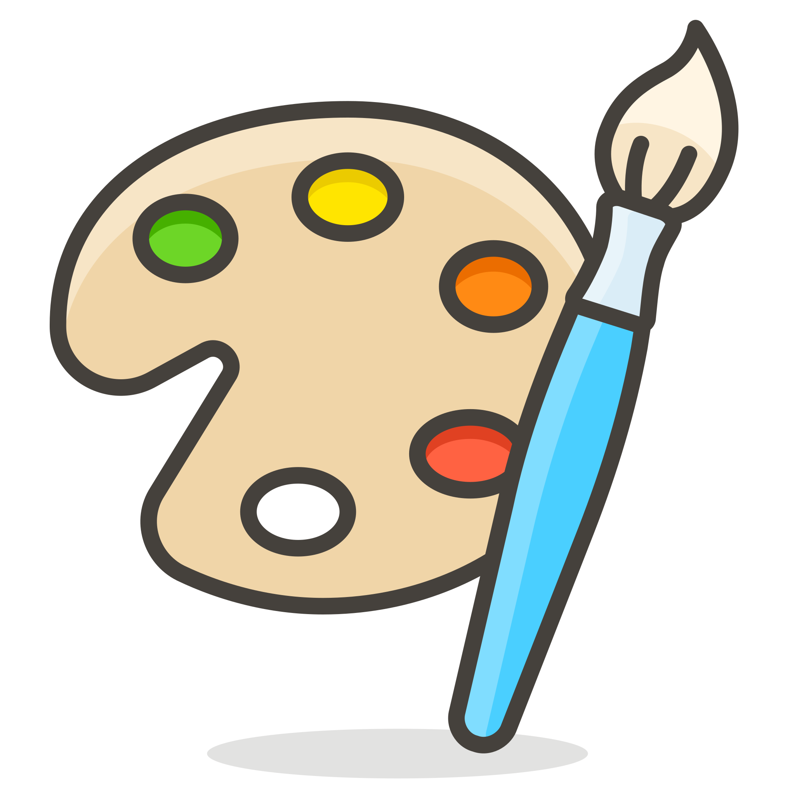

Oscar Alfonso Romero Moreno
Estudiante de Ingeniería en Sistemas de Información
Web Developer & UX/UI Designer
Intereses
Ingeniería de Software
Aplicar los conceptos aprendidos en la facultad para desarrollar software escalable y de calidad. Mediante la captación de requerimientos, podemos construir sistemas robustos y a la medida.

Diseño de Interfaces
Conocer al usuario, empatizar y poder plasmar sus necesidades a través de herramientas de diseños de interfaces. A través de una buena interfaz, el usuario podrá interactuar de forma amena con el sistema.
Empatía con el Usuario
Comprender el corazón de las personas. El software debe ser un vehículo para resolver problemáticas de usuarios reales, que conecten con sus ideas, sueños y pensamientos, construyendo un software útil.